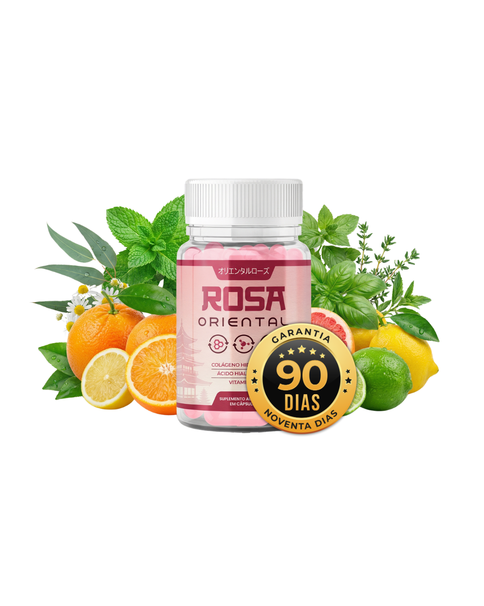

Basta conversar com mulheres vaidosas e cuidadosas acima dos 45 anos para ouvir uma história que se repete quase todas as noites.
A casa fica em silêncio. Diante do espelho do banheiro, vem aquele ritual feito com todo carinho: aplicar um creme facial caro na esperança de acordar com a pele mais firme e descansada.
Na hora, a superfície da pele fica macia e perfumada. Parece até que, desta vez, o resultado vai ser diferente.
Mas na manhã seguinte, ao lavar o rosto ou tirar uma foto de perto na luz natural do dia, vem a frustração silenciosa.
As linhas ao redor da boca e dos olhos parecem exatamente no mesmo lugar. E a pele do pescoço e do colo continua pedindo uma atenção especial — muitas vezes fazendo com que blusas mais fechadas ou um lenço elegante virem companhia constante.
Diante disso, a dúvida que surge para milhares de brasileiras é sempre a mesma: "Se eu cuido tão bem da minha rotina, por que os cremes parecem parar de fazer efeito depois dos 40?"
A resposta da dermatologia moderna traz um alívio imediato: não é falta de cuidado seu.
É apenas uma questão de física — porque a maioria dos produtos tenta agir do lado errado da pele.
"Sua pele não foi criada pela natureza para ser uma esponja que absorve cremes. Ela foi criada para ser um escudo impenetrável que barra quase tudo do lado de fora."
O Segredo da "Bola de Basquete na Peneira" (A Regra dos 500 Daltons)
Existe um princípio científico amplamente documentado na dermatologia mundial chamado Regra dos 500 Daltons (estudado na Universidade de Amsterdam).
Funciona de forma muito simples: para proteger o nosso corpo do ambiente externo, os poros da camada superficial da pele agem como uma peneira finíssima.
Essa barreira natural só permite a passagem de moléculas minúsculas, de no máximo 500 Daltons de tamanho.
E é justamente aqui que mora o detalhe que pouca gente conhece:
A molécula de colágeno presente nos cremes comuns — mesmo naqueles importados que custam R$ 300 ou R$ 500 — é gigantesca. Ela possui cerca de 300.000 Daltons.
Ou seja: tentar fazer um creme atravessar até a camada profunda da firmeza é, literalmente, como tentar passar uma bola de basquete pelos furinhos de uma peneira fina. Fisicamente, ela não passa.
Por que os cremes ficam retidos na superfície?
Compare o tamanho máximo que a barreira da pele permite entrar com o tamanho das moléculas nos cosméticos tradicionais:
Daltons
Tamanho máximo que passa pela barreira da pele
Daltons
Tamanho da molécula nos cremes comuns
Os 3 Equívocos que Fazem Tantas Mulheres Gastarem Sem Ver Resultado
A Solução Japonesa: O Efeito "Carro-Forte" de Proteção Celular
Se os cremes comuns param na barreira externa da pele, e os pós tradicionais perdem força no estômago... como entregar os nutrientes intactos até as camadas profundas do rosto?
Foi exatamente esse desafio que a engenharia nutricional japonesa resolveu com a tecnologia conhecida como Efeito "Carro-Forte".
Em vez de deixar os nutrientes expostos, os pesquisadores protegeram micro-partículas puras dentro de uma Nano-Cápsula Blindada.
Essa cápsula atravessa o estômago totalmente fechada e protegida, exatamente como um carro-forte blindado.
Ela só libera os ativos quando chega ao intestino delgado, onde o organismo absorve 98,7% dos nutrientes para a corrente sanguínea. Dali, eles nutrem de dentro para fora o rosto, o pescoço e o colo enquanto você descansa.
Já entendeu por que a nutrição precisa vir de dentro para fora?
No Brasil, a fórmula original com Nano-Cápsula Blindada (98,7% de biodisponibilidade) e garantia de 90 dias foi batizada de Rosa Oriental. Se você já deseja conferir os kits promocionais com frascos extras grátis, acesse direto abaixo ou continue lendo para ver os 4 bioativos da composição:
👉 CONHECER O ROSA ORIENTAL E VER KITS OFICIAIS 🔒 Site Oficial do Fabricante · Envio com Frete Grátis e Parcelamento em até 12xOs 4 Pilares Visíveis no Espelho (Quando a Nutrição Chega na Raiz)
Ao entregar os 4 bioativos essenciais diretamente pela via interna todas as noites, o cuidado atua em 4 frentes complementares:
1. O "Efeito Esponja" de Hidratação
O Ácido Hialurônico retém até 1.000x seu peso em água nas camadas internas. Ajuda a suavizar a aparência das linhas finas de dentro para fora.
2. O "Colchão" de Sustentação
Micro-partículas de Colágeno Japonês que fornecem os tijolos estruturais para apoiar a firmeza e elasticidade do rosto, pescoço e colo.
3. Despertar do "Viço Descansado"
Nos cremes, a Vitamina C oxida em contato com o ar. Na cápsula protegida, ela chega 100% ativa para apoiar o brilho natural e uniformizar o tom da pele.
4. A "Trava" de Maciez Contínua
A Vitamina B5 (Pantenol) fortalece a barreira natural da pele. Ajuda a reter a hidratação ao longo do dia e mantém o toque macio e aveludado.
Por que tantas mulheres 45+ estão adotando esse ritual noturno no Brasil?
- Praticidade de 10 Segundos à Noite: Como o hábito de tomar apenas 1 cápsula cerca de 2 horas antes de dormir acompanha o ciclo natural de renovação noturna da pele.
- Custo-Benefício Inteligente: Como nutrir a pele de dentro para fora custa menos que um café expresso por dia — substituindo pilhas de potes caros na prateleira.
- Lote Oficial com Frascos Extras Grátis: Como funciona a condição especial da distribuidora oficial para novas clientes — com pacotes que incluem até 2 frascos extras grátis e Frete Grátis.
- O Desafio de 90 Dias (Risco Zero): Por que o fabricante permite que você faça o teste real por 3 meses completos, com reembolso integral caso não fique encantada com os resultados.
No Brasil, a fórmula original com a tecnologia de Nano-Cápsula Blindada e conformidade com a ANVISA (RDC 240/18) foi batizada de Rosa Oriental.
Conheça o Rosa Oriental Oficial
Apenas 1 cápsula à noite (2 horas antes de dormir) para nutrir e apoiar as camadas profundas do seu rosto, pescoço e colo enquanto você descansa.

O Desafio de 90 Dias (Risco Zero)
Você recebe o Rosa Oriental em casa com Frete Grátis e faz o teste real. Se em 90 dias você não ficar encantada com a firmeza, hidratação e viço da sua pele no espelho, basta enviar uma mensagem e devolvemos 100% do seu investimento.
>> VERIFICAR DISPONIBILIDADE E KITS COM FRASCOS GRÁTIS << 🔒 Toque no botão verde acima para ver a tabela completa e os pacotes promocionais no Site Oficial
Nota Importante à Leitora: Para evitar falsificações, o verdadeiro Rosa Oriental não é comercializado em farmácias nem em marketplaces como Mercado Livre, Shopee ou Amazon. A venda oficial com garantia de 90 dias e envio imediato pelos Correios é feita exclusivamente através dos botões oficiais desta matéria.
Nota Final para as Leitoras: Se você já tentou cuidar da pele apenas por fora com cremes comuns, experimente nutrir sua pele de dentro para fora com a tecnologia japonesa do Rosa Oriental. Com o Desafio de 90 Dias + Frete Grátis, você pode testar na sua própria rotina com total segurança e tranquilidade.
>> VERIFICAR KITS COM FRASCOS GRÁTIS NO SITE OFICIAL << 🔒 Acesso direto à página oficial do fabricante · Em até 12x ou PIX com envio rápido
Gente, essa explicação da bola de basquete na peneira abriu minha mente! Eu já tinha gastado uma fortuna em cremes que prometiam mundos e fundos e só deixavam o rosto oleoso. Estou no final do segundo pote do Rosa Oriental (peguei o kit de 5 meses) e até minha irmã perguntou o que eu fiz no rosto de tão firme e iluminada que minha pele está!
Eu sempre tive receio de comprar pela internet, mas chegou direitinho pelos Correios aqui no interior de SP em 5 dias úteis. Tomo todo dia 2 horinhas antes de dormir. As linhas perto da boca e no colo deram uma suavizada linda, já não fico mais escondendo o pescoço com lenço.
Aconteceu exatamente isso comigo com o colágeno em pó! Tomava aquele pó ruim todo dia de manhã e não via diferença nenhuma. Agora entendi que o estômago destruía tudo antes de chegar na pele. Acabei de garantir meu kit de 3 + 2 grátis pelo link oficial aqui da matéria, obrigada!
Meninas, vale muito a pena pegar o kit com os potes extras grátis. Eu dividi o primeiro mês com minha filha de 36 anos e nós duas amamos, a pele acorda descansada e super macia, parece que segura a hidratação o dia inteiro.